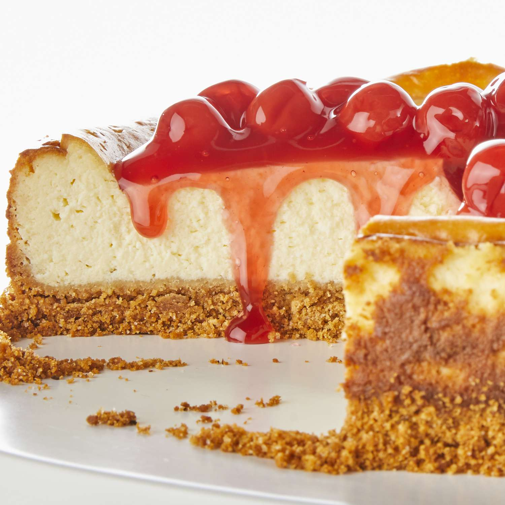

Cheesecake

Ingredients
- 1 and 3/4 cups graham cracker crumbs
- 1/3 cup butter, melted
- 1 and 1/4 cups sugar, divided
- 3 (8 ounce) packages cream cheese, softened
- 1 cup sour cream
- 2 teaspoons vanilla
- 3 large eggs
- 1 (21 ounce) can cherry pie filling
Directions
- Preheat the oven to 350 degrees F (180 degrees C).
- Mix graham crumbs, butter, and 1/4 cup sugar together in a large bowl.
- Press crumbs onto bottom of 9-inch springform pan.
- Beat cream cheese and remaining sugar in large bowl with mixer until blended. Add sour cream and vanilla; mix well.
- Add eggs, 1 at a time, beating on low speed after each addition just until blended.
- Pour mixture over crust.
- Bake in the preheated oven until the center is almost set, about 1 hour to 1 hour 10 minutes. Run knife around rim of pan to loosen cake; cool before removing rim. Refrigerate cheesecake 4 hours.
- Top with pie filling before serving.